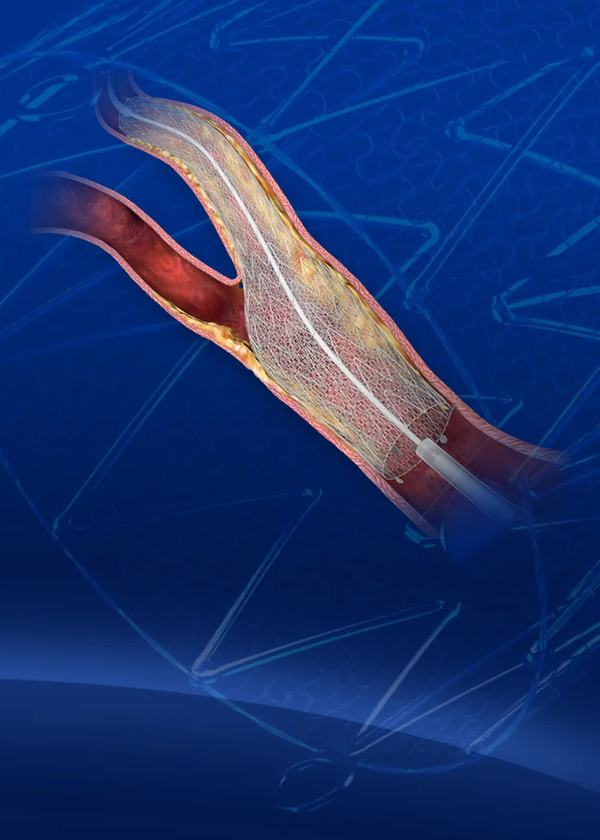
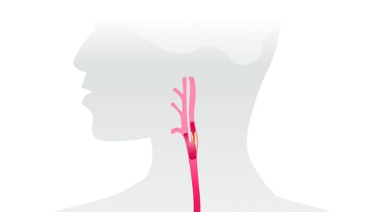

CGuard EPS and CGuard Prime each pair a self-expanding nitinol stent with a woven polymer mesh sleeve. The mesh pores are 150–180 microns.
30+
Countries where distributors market CGuard EPS, mainly in Europe; not FDA-approved in the U.S. (10-K, 10-Q)
Status per the 10-Q, Aug 14, 2026.
CGuard Prime
FDA approved
U.S. sales paused
FDA premarket approval (Jun 2025), for patients at high surgical risk. The 135 cm delivery system was recalled in the U.S. in May 2026 after a controlled launch showed it missed performance expectations; the stent itself was not. U.S. sales may not resume until the FDA is satisfied.
CGuard EPS
Submitted to FDA
FDA premarket approval application submitted in Q1 2026; not approved. Sold through distributors outside the U.S.

The 10-Q reports substantial doubt about the company's ability to continue as a going concern. If the company cannot raise capital or commercialize its products, it may curtail or cease operations.
$8.98M
FY2025 revenue, up 28.1%
$48.8M
FY2025 net loss, up 52.4%
$30.4M
Cash and securities, Jun 30, unaudited (Dec 31: $54.2M)
H1 2026, unaudited: revenue $5.17M, up 56.3% (the second quarter alone, down 0.4%); net loss $28.0M, from $24.3M.
Risks: going-concern doubt, U.S. recall, Nasdaq notice, dilution. Forward-looking statements; not an offer. Dilution at Jun 30 (unaudited): 46.9M shares outstanding (6.7M unvested), plus 43.1M pre-funded warrants and 25.8M Series J/K warrants (14.3M repriced to a $0.77 exercise price Sep 21). Up to $75M of new stock may be sold at market prices (none under this plan by Aug 14). U.S. sales may not resume until FDA is satisfied. FDA approval or clearance not assured for CGuard EPS, an 80 cm version of Prime, or SwitchGuard. Nasdaq: delisting risk, first deadline Jan 13, 2027. One Tel Aviv factory; Israel security situation. See SEC filings.